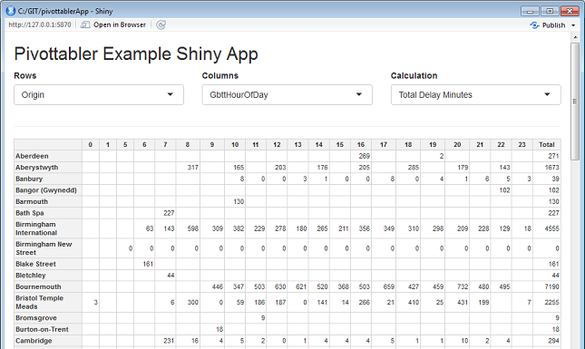
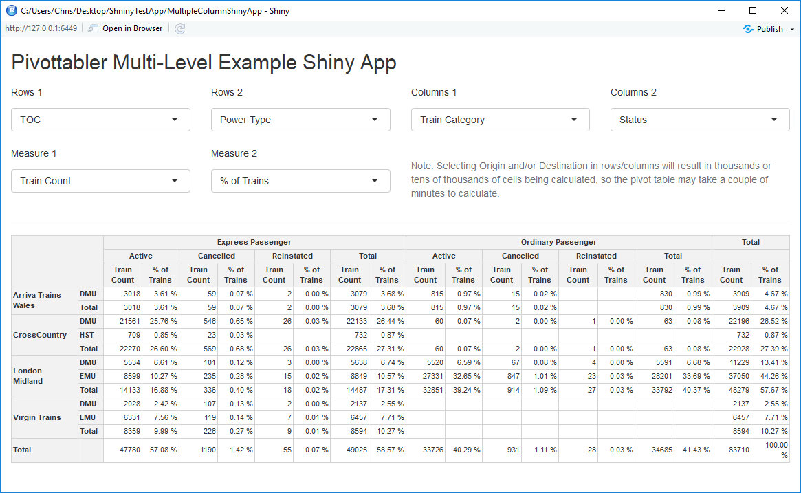

In This Vignette
- About Shiny
- Examples
- Example 1: Minimal Example
- Example 2: Comparing pairs of variables
- Example 3: Multiple rows, columns and measures
About Shiny
Shiny is an R package that makes it easy to build interactive web applications (apps) straight from R.
Good starting points for using Shiny are:
Examples
This vignette presents a couple of examples to get started using ‘pivottabler’ with Shiny. They are not intended to be fully featured applications, rather they are intended to help the reader get started quickly using pivottabler with Shiny.
To use each of these examples, create a new single-file Shiny web application in RStudio, then paste the R code into the app.R file.
Example 1: Minimal Example
library(shiny) library(htmlwidgets) library(pivottabler) ui <- fluidPage( titlePanel("Pivottabler Minimal Example Shiny App"), sidebarLayout( sidebarPanel( selectInput("selectRows", label = h5("Rows"), choices = list("Train Category" = "TrainCategory", "TOC" = "TOC", "Power Type" = "PowerType"), selected = "TOC"), selectInput("selectCols", label = h5("Columns"), choices = list("Train Category" = "TrainCategory", "TOC" = "TOC", "Power Type" = "PowerType"), selected = "TrainCategory") ), mainPanel( pivottablerOutput('pvt') ) ) ) server <- function(input, output) { output$pvt <- renderPivottabler({ pt <- PivotTable$new() pt$addData(bhmtrains) pt$addColumnDataGroups(input$selectCols) pt$addRowDataGroups(input$selectRows) pt$defineCalculation(calculationName="TotalTrains", summariseExpression="n()") pt$evaluatePivot() pivottabler(pt) }) } shinyApp(ui = ui, server = server)

Minimal pivottabler Shiny App
Example 2: Comparing pairs of variables
library(shiny) library(htmlwidgets) library(pivottabler) library(dplyr) library(lubridate) getDelayBand <- function(delayMinutes) { if(is.na(delayMinutes)) return(NA) else if(delayMinutes <= 0) return(0) else if(delayMinutes <= 1) return(1) else if(delayMinutes <= 2) return(2) else if(delayMinutes <= 5) return(5) else if(delayMinutes <= 10) return(10) else if(delayMinutes <= 15) return(15) else if(delayMinutes <= 20) return(20) else if(delayMinutes <= 30) return(30) else if(delayMinutes <= 45) return(45) else if(delayMinutes <= 60) return(60) else if(delayMinutes <= 90) return(90) else if(delayMinutes <= 120) return(120) else if(delayMinutes <= 180) return(180) else if(delayMinutes <= 240) return(240) else if(delayMinutes <= 300) return(300) else return(999) } getDelayBands <- function(delayMinutes) { return(sapply(delayMinutes, getDelayBand)) } stations <- mutate(trainstations, CrsCodeChr=as.character(CrsCode)) trains <- bhmtrains %>% mutate(OriginChr=as.character(Origin), DestinationChr=as.character(Destination)) %>% inner_join(stations, by=c("OriginChr"="CrsCodeChr")) %>% inner_join(stations, by=c("DestinationChr"="CrsCodeChr")) %>% select(Status, TOC, TrainCategory, PowerType, SchedSpeedMPH, Origin=StationName.x, OriginGbttDeparture, OriginActualDeparture, GbttArrival, ActualArrival, GbttDeparture, ActualDeparture, Destination=StationName.y, DestinationGbttArrival, DestinationActualArrival) %>% mutate(Status=recode(Status, "A"="Normal", "C"="Cancelled", "R"="Reinstated"), GbttDateTime=if_else(is.na(GbttArrival), GbttDeparture, GbttArrival), GbttHourOfDay=hour(GbttDateTime), GbttDate=make_date(year=year(GbttDateTime), month=month(GbttDateTime), day=day(GbttDateTime)), GbttMonth=make_date(year=year(GbttDateTime), month=month(GbttDateTime), day=1), ArrivalDeltaMins=difftime(ActualArrival, GbttArrival, units="mins"), ArrivalDelayMins=ifelse(ArrivalDeltaMins<0, 0, ArrivalDeltaMins), ArrivalDelayBand=getDelayBands(ArrivalDelayMins)) %>% select(Status, TOC, TrainCategory, PowerType, SchedSpeedMPH, Origin, Destination, GbttMonth, GbttDate, GbttHourOfDay, ArrivalDeltaMins, ArrivalDelayMins, ArrivalDelayBand) ui <- fluidPage( titlePanel("Pivottabler Minimal Example Shiny App"), fluidRow( column(4, selectInput("selectRows", label = "Rows", choices=list("")) ), column(4, selectInput("selectCols", label = "Columns", choices=list("")) ), column(4, selectInput("selectCalc", label = "Calculation", choices = list("Total Trains", "Total Delay Minutes"), selected = "Total Trains") ) ), hr(), pivottablerOutput('pvt') ) server <- function(input, output, session) { observe({ isolate({ sr <- input$selectRows sc <- input$selectCols updateSelectInput(session, "selectRows", label = "Rows", choices = names(trains) ) updateSelectInput(session, "selectCols", label = "Columns", choices = names(trains) ) }) }) output$pvt <- renderPivottabler({ if((length(input$selectRows)>0)&&(nchar(input$selectRows)>0)) { pt <- PivotTable$new() trains2 <- trains %>% group_by_(input$selectCols, input$selectRows) %>% summarise(TotalTrains=n(), DelayMinutes=sum(ArrivalDelayMins, na.rm=TRUE)) %>% ungroup() pt$addData(trains2) pt$addColumnDataGroups(input$selectCols) pt$addRowDataGroups(input$selectRows) if(input$selectCalc=="Total Trains") pt$defineCalculation(calculationName="TotalTrains", summariseExpression="sum(TotalTrains)") else if (input$selectCalc=="Total Delay Minutes") pt$defineCalculation(calculationName="ToalDelayMinutes", summariseExpression="sum(DelayMinutes, na.rm=TRUE)") pt$evaluatePivot() pivottabler(pt) } }) } shinyApp(ui = ui, server = server)

Comparing pairs of variables with Shiny and pivottabler
Example 3: Multiple rows, columns and measures
library(shiny) library(htmlwidgets) library(dplyr) library(lubridate) library(pivottabler) # START OF DATA PREP # to be used when getting station names in joins below tsorigin = transmute(trainstations, CrsCode=as.character(CrsCode), OriginName=as.character(StationName)) tsdestination = transmute(trainstations, CrsCode=as.character(CrsCode), DestinationName=as.character(StationName)) # recode status and join to get station names from CrsCodes data <- bhmtrains %>% mutate(Status = recode(Status, "A" = "Active", "C" = "Cancelled", "R" = "Reinstated"), Origin = as.character(Origin), Destination = as.character(Destination)) %>% left_join(tsorigin, by = c("Origin" = "CrsCode")) %>% left_join(tsdestination, by = c("Destination" = "CrsCode")) # derive some additional delay data data <- mutate(data, GbttDateTime=if_else(is.na(GbttArrival), GbttDeparture, GbttArrival), GbttMonth=make_date(year=year(GbttDateTime), month=month(GbttDateTime), day=1), IsArrival=ifelse(is.na(GbttArrival), 0, 1), ArrivalDelta=difftime(ActualArrival, GbttArrival, units="mins"), ArrivalDelay=ifelse(ArrivalDelta<0, 0, ArrivalDelta), DelayedByMoreThan5Minutes=ifelse(ArrivalDelay>5,1,0)) totalTrainCount <- nrow(data) # END OF DATA PREP ui <- fluidPage( titlePanel("Pivottabler Multi-Level Example Shiny App"), fluidRow( column(3, selectInput("selectRows1", label = h5("Rows 1"), choices = list("None" = "None", "Status" = "Status", "Train Category" = "TrainCategory", "TOC" = "TOC", "Power Type" = "PowerType", "Scheduled Speed" = "SchedSpeedMPH", "Origin" = "OriginName", "Destination" = "DestinationName"), selected = "TOC") ), column(3, selectInput("selectRows2", label = h5("Rows 2"), choices = list("None" = "None", "Status" = "Status", "Train Category" = "TrainCategory", "TOC" = "TOC", "Power Type" = "PowerType", "Scheduled Speed" = "SchedSpeedMPH", "Origin" = "OriginName", "Destination" = "DestinationName"), selected = "None") ), column(3, selectInput("selectCols1", label = h5("Columns 1"), choices = list("None" = "None", "Status" = "Status", "Train Category" = "TrainCategory", "TOC" = "TOC", "Power Type" = "PowerType", "Scheduled Speed" = "SchedSpeedMPH", "Origin" = "OriginName", "Destination" = "DestinationName"), selected = "TrainCategory") ), column(3, selectInput("selectCols2", label = h5("Columns 2"), choices = list("None" = "None", "Status" = "Status", "Train Category" = "TrainCategory", "TOC" = "TOC", "Power Type" = "PowerType", "Scheduled Speed" = "SchedSpeedMPH", "Origin" = "OriginName", "Destination" = "DestinationName"), selected = "None") ) ), fluidRow( column(3, selectInput("selectMeasure1", label = h5("Measure 1"), choices = list("Train Count" = "Train Count", "% of Trains" = "% of Trains", "Total Arrival Delay Minutes" = "Total Arrival Delay Minutes", "Average Arrival Delay Minutes" = "Average Arrival Delay Minutes", "Max Arrival Delay Minutes" = "Max Arrival Delay Minutes", "Trains with Arrival Delay >= 5 Minutes", "% of Trains with Arrival Delay >= 5 Minutes"), selected = "Train Count") ), column(3, selectInput("selectMeasure2", label = h5("Measure 2"), choices = list("None", "Train Count" = "Train Count", "% of Trains" = "% of Trains", "Total Arrival Delay Minutes" = "Total Arrival Delay Minutes", "Average Arrival Delay Minutes" = "Average Arrival Delay Minutes", "Max Arrival Delay Minutes" = "Max Arrival Delay Minutes", "Trains with Arrival Delay >= 5 Minutes", "% of Trains with Arrival Delay >= 5 Minutes"), selected = "None") ), column(6, br(), helpText("Note: Selecting Origin and/or Destination in rows/columns will result in thousands or tens of thousands of cells being calculated, so the pivot table may take a couple of minutes to calculate.") ) ), hr(), pivottablerOutput('pvt') ) server <- function(input, output) { output$pvt <- renderPivottabler({ pt <- PivotTable$new() pt$addData(data) # rows and columns if (input$selectCols1 != "None") { pt$addColumnDataGroups(input$selectCols1) } if (input$selectCols2 != "None") { pt$addColumnDataGroups(input$selectCols2) } if (input$selectRows1 != "None") { pt$addRowDataGroups(input$selectRows1) } if (input$selectRows2 != "None") { pt$addRowDataGroups(input$selectRows2) } # measure 1 if (input$selectMeasure1 == "Train Count") { pt$defineCalculation(calculationName="TotalTrains", summariseExpression="n()", caption="Train Count") } else if (input$selectMeasure1 == "% of Trains") { pt$defineCalculation(calculationName="TotalTrains", summariseExpression="n()", visible=FALSE) pt$defineCalculation(calculationName="PercentageOfTrains", caption="% of Trains", type="calculation", basedOn=c("TotalTrains"), format="%.2f %%", calculationExpression=paste0("values$TotalTrains/", totalTrainCount, "*100")) } else if (input$selectMeasure1 == "Total Arrival Delay Minutes") { pt$defineCalculation(calculationName="TotalArrivalDelayMinutes", caption="Total Arrival Delay Minutes", summariseExpression="sum(ArrivalDelay, na.rm = TRUE)") } else if (input$selectMeasure1 == "Average Arrival Delay Minutes") { pt$defineCalculation(calculationName="TotalArrivals", summariseExpression="sum(IsArrival, na.rm=TRUE)", visible=FALSE) pt$defineCalculation(calculationName="TotalArrivalDelayMinutes", summariseExpression="sum(ArrivalDelay, na.rm = TRUE)", visible=FALSE) pt$defineCalculation(calculationName="AverageArrivalDelayMinutes", caption="Average Arrival Delay Minutes", type="calculation", basedOn=c("TotalArrivals", "TotalArrivalDelayMinutes"), format="%.2f", calculationExpression="values$TotalArrivalDelayMinutes/values$TotalArrivals") } else if (input$selectMeasure1 == "Max Arrival Delay Minutes") { pt$defineCalculation(calculationName="MaxArrivalDelayMinutes", caption="Max Arrival Delay Minutes", summariseExpression="max(ArrivalDelay, na.rm = TRUE)") } else if (input$selectMeasure1 == "Trains with Arrival Delay >= 5 Minutes") { pt$defineCalculation(calculationName="Trains5orMoreMinsLate", caption="Trains with Arrival Delay >= 5 Minutes", summariseExpression="sum(DelayedByMoreThan5Minutes, na.rm = TRUE)") } else if (input$selectMeasure1 == "% of Trains with Arrival Delay >= 5 Minutes") { pt$defineCalculation(calculationName="TotalArrivals", summariseExpression="sum(IsArrival, na.rm=TRUE)", visible=FALSE) pt$defineCalculation(calculationName="Trains5orMoreMinsLate", summariseExpression="sum(DelayedByMoreThan5Minutes, na.rm = TRUE)", visible=FALSE) pt$defineCalculation(calculationName="PercentageOfTrainsWithArrivalDelay5orMoreMinutesLate", caption="% of Trains with Arrival Delay >= 5 Minutes", type="calculation", basedOn=c("TotalArrivals", "Trains5orMoreMinsLate"), format="%.2f %%", calculationExpression="values$Trains5orMoreMinsLate/values$TotalArrivals*100") } # measure 2 if (input$selectMeasure2 == "Train Count") { pt$defineCalculation(calculationName="TotalTrains2", summariseExpression="n()", caption="Train Count") } else if (input$selectMeasure2 == "% of Trains") { pt$defineCalculation(calculationName="TotalTrains2", summariseExpression="n()", visible=FALSE) pt$defineCalculation(calculationName="PercentageOfTrains2", caption="% of Trains", type="calculation", basedOn=c("TotalTrains2"), format="%.2f %%", calculationExpression=paste0("values$TotalTrains2/", totalTrainCount, "*100")) } else if (input$selectMeasure2 == "Total Arrival Delay Minutes") { pt$defineCalculation(calculationName="TotalArrivalDelayMinutes2", caption="Total Arrival Delay Minutes", summariseExpression="sum(ArrivalDelay, na.rm = TRUE)") } else if (input$selectMeasure2 == "Average Arrival Delay Minutes") { pt$defineCalculation(calculationName="TotalArrivals2", summariseExpression="sum(IsArrival, na.rm=TRUE)", visible=FALSE) pt$defineCalculation(calculationName="TotalArrivalDelayMinutes2", summariseExpression="sum(ArrivalDelay, na.rm = TRUE)", visible=FALSE) pt$defineCalculation(calculationName="AverageArrivalDelayMinutes2", caption="Average Arrival Delay Minutes", type="calculation", basedOn=c("TotalArrivals2", "TotalArrivalDelayMinutes2"), format="%.2f", calculationExpression="values$TotalArrivalDelayMinutes2/values$TotalArrivals2") } else if (input$selectMeasure2 == "Max Arrival Delay Minutes") { pt$defineCalculation(calculationName="MaxArrivalDelayMinutes2", caption="Max Arrival Delay Minutes", summariseExpression="max(ArrivalDelay, na.rm = TRUE)") } else if (input$selectMeasure2 == "Trains with Arrival Delay >= 5 Minutes") { pt$defineCalculation(calculationName="Trains5orMoreMinsLate2", caption="Trains with Arrival Delay >= 5 Minutes", summariseExpression="sum(DelayedByMoreThan5Minutes, na.rm = TRUE)") } else if (input$selectMeasure2 == "% of Trains with Arrival Delay >= 5 Minutes") { pt$defineCalculation(calculationName="TotalArrivals2", summariseExpression="sum(IsArrival, na.rm=TRUE)", visible=FALSE) pt$defineCalculation(calculationName="Trains5orMoreMinsLate2", summariseExpression="sum(DelayedByMoreThan5Minutes, na.rm = TRUE)", visible=FALSE) pt$defineCalculation(calculationName="PercentageOfTrainsWithArrivalDelay5orMoreMinutesLate2", caption="% of Trains with Arrival Delay >= 5 Minutes", type="calculation", basedOn=c("TotalArrivals2", "Trains5orMoreMinsLate2"), format="%.2f %%", calculationExpression="values$Trains5orMoreMinsLate2/values$TotalArrivals2*100") } # generate pivot tabler pt$evaluatePivot() pivottabler(pt) }) } shinyApp(ui = ui, server = server)

Multi-Level Example Shiny App